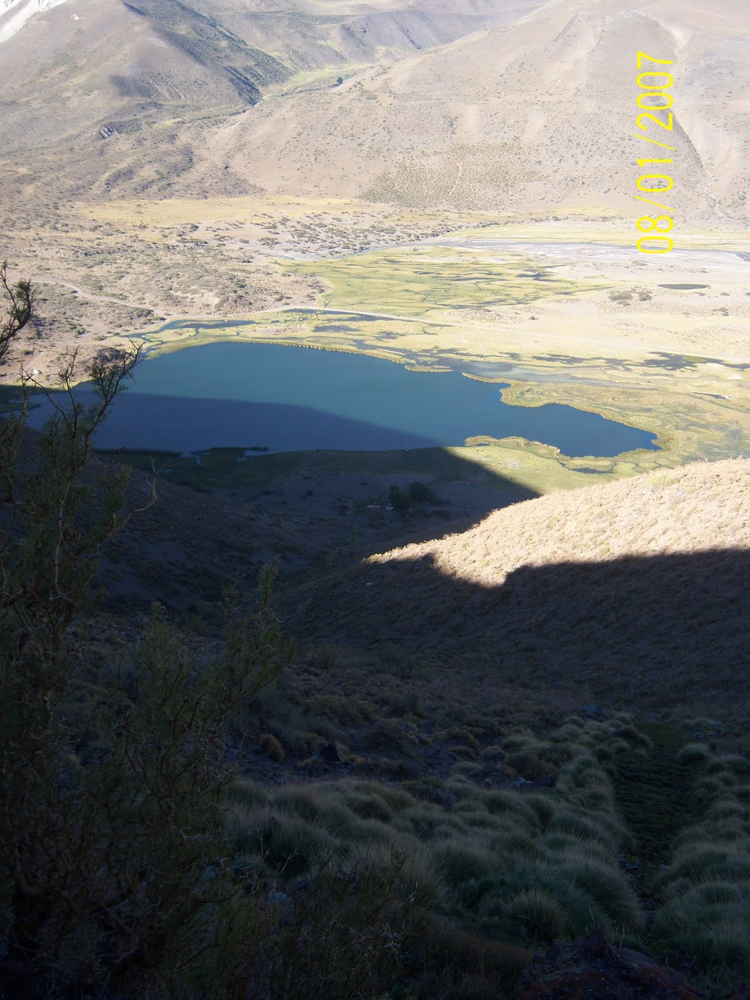
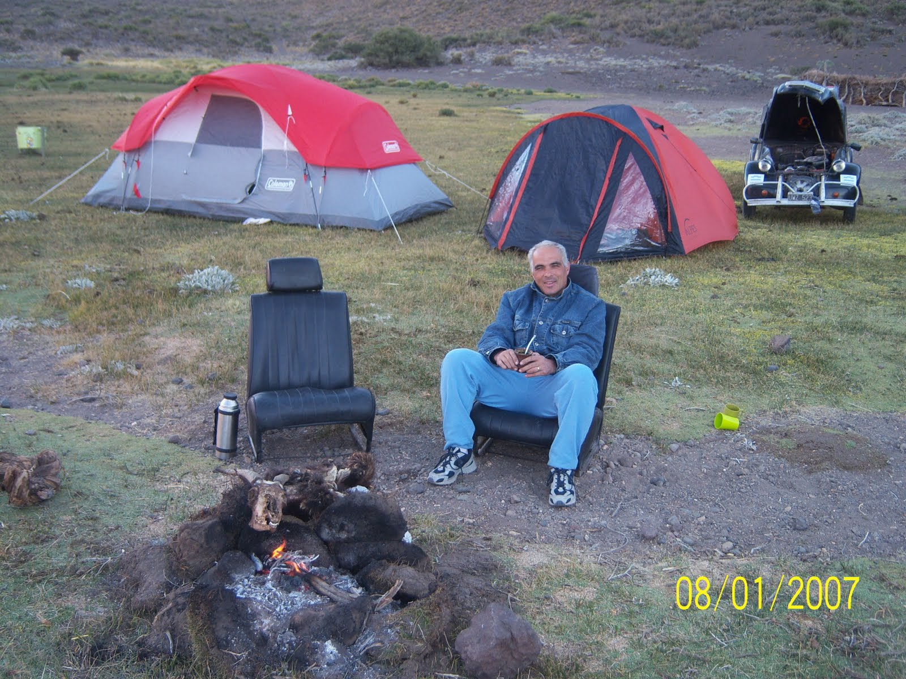
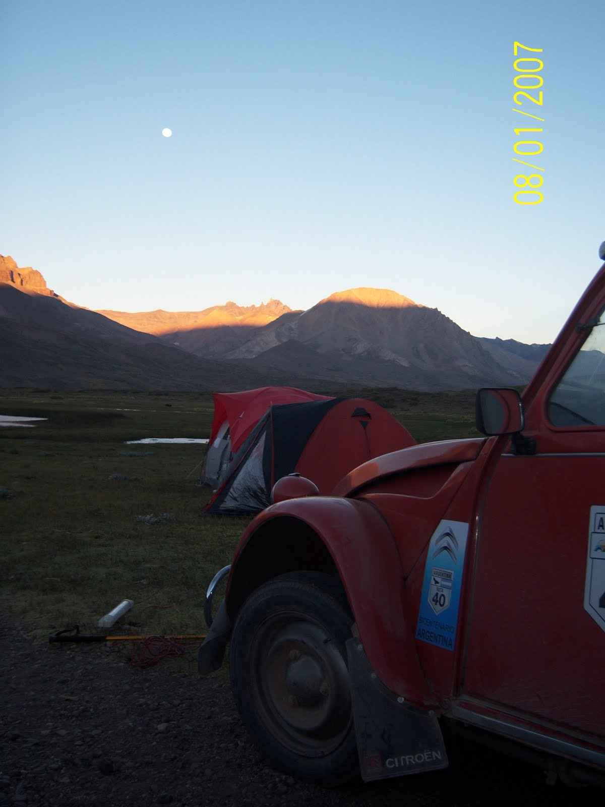
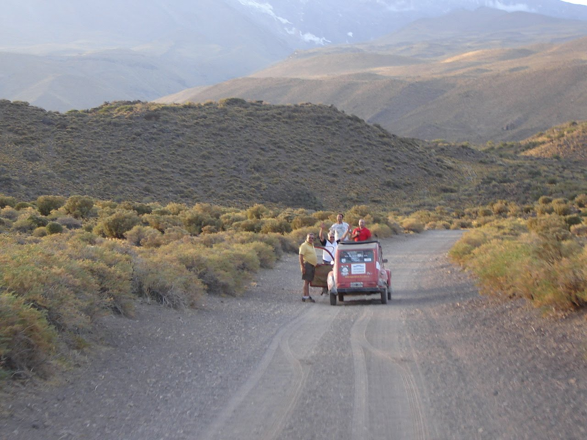
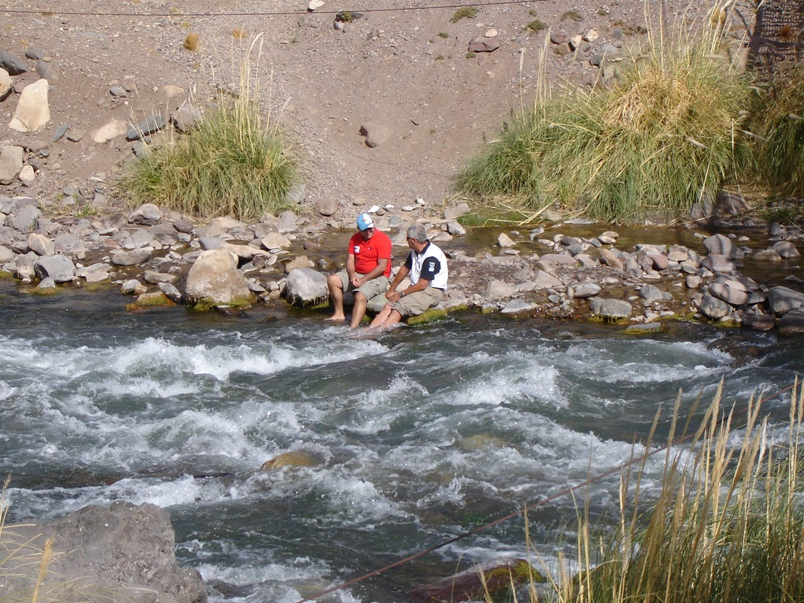
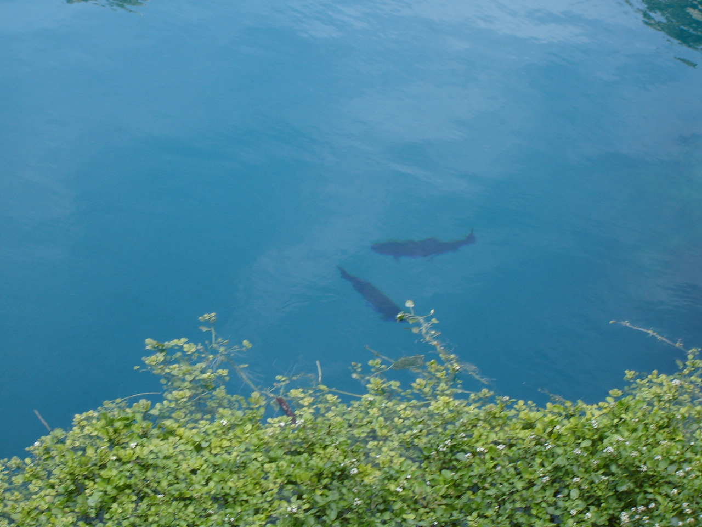

La despedida de la Ruta 40 en Malargüe, nos dejaba la sensación de que queríamos mas. Este sentimiento se fue madurando a lo largo del día, y en el relato les voy a contar que sucedió.
José hizo la revisión de las maquinas, igual que un padre cuida a sus hijos, y fue a la Dirección de Turismo donde le hicieron una serie de notas y fotografías de la Citronaves para la prensa local.
La partida hacia San Rafael, contemplaba el paso por algunos lugares. El primero fue la laguna de la Niña Encantada. El color del agua fue impresionante, y yo nunca vi un turquesa igual. Debo confesar que la baba se me caía (sialorrea...término medico, jajaja) al ver a las truchas nadar por ese agua tan clara. Con Fernando nos sentamos después, en una piedras de un rió que pasaba cerca de ese lugar, y pusimos las patas en remojo al igual que dos viejas.
Por el vídeo que subí de mi Hermano, en alianza con José grabaron otro en donde me gastaban una broma de como se pone en marcha un 3cv. Ese vídeo jamas estará publicada acá....es muy pesado informaticamente hablando....jajaja. En ese lugar perdí el teléfono, que por milagro después recuperé.
Desde ahí partimos a la laguna del Sosneado. Ese lugar esta al pie de la cordillera y próximo al sitio del accidente de la película VIVEN. El camino para llegar es de 40 km. ripio y MUCHO polvo!!!!! Las únicas provisiones que teníamos eran unos panes y salamín con queso.
El Principito interpretó el sentir de todos y a pocos metros de la llegada comenzó a fallar!!!!
el diagnostico estaba claro. La noche había que pasarla ahí ya que el sol se estaba escondiendo, y seria complicado repara el auto en la oscuridad y después regresar.
Armamos las carpas, y conseguimos comida!!! Este lugar que está en el medio de la nada , es habitado por unos gauchos que crían ovejas. Después de vencer su desconfianza inicial, logramos que se suba en el All Black y salimos de cacería por el monte a buscar un chivo.
La misión se cumplió con éxito. El chivo se cazó, carneó, cocinó y pasó de la parrilla a nuestras panzas....salvo en algún caso que se quedaron impresionadas por la velocidad de la cadena alimentaria y se conformaron con la picada previa. También disfrutamos un exquisito vino blanco de la finca de la familia política de Martín (Gracias Fede Basso!!!!). Paula, me dio unas clases de fotografías nocturnas, ya que la vista de la luna y las sombras de las montañas eran impresionantes.
Del medio de la nada aparecieron dos italianos con una botellas de SAMBUCA y GRAPA que compartieron con nosotros, y rompieron el hielo para generar una charla extensa y divertida.
Uno a uno los cuerpos de los citronautas fueron desapareciendo dentro de las carpas y el fuego se fue consumiendo alrededor de las butacas de las Citronaves, que sacamos de los autos para estar como queríamos.... en donde queríamos ( frase que acuñe de mi hermano Martín)
Bueno este día fue intenso y cargado de emociones..... el Camino a San Rafael viene después....
Nota: lamentablemente las fotos con el chivo vivo dentro de la citronave y mis fotos nocturnas se perdieron en el ciber espacio...... vean entradas anteriores que estoy subiendo vídeos y fotos que faltan!!!!!
HOla gente... Increible lo del chivito!!! Los felicito por el empuje que ponen todos a pesar de los desperfectos mecanicos... FELICES PASCUAS Y Un abrazo enorme desde la nublada Ituzaingo.